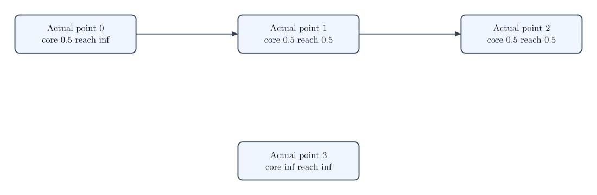
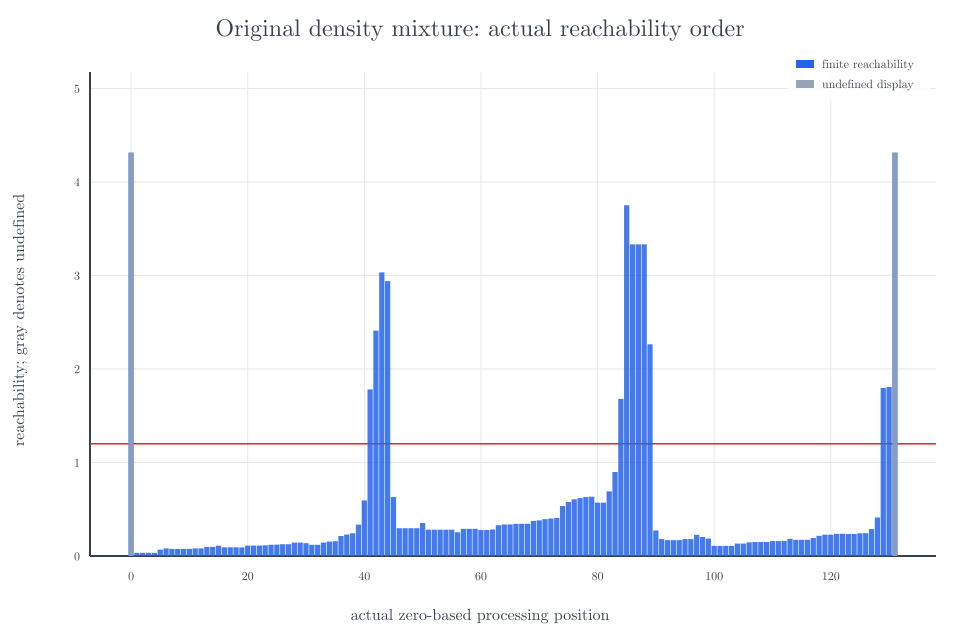
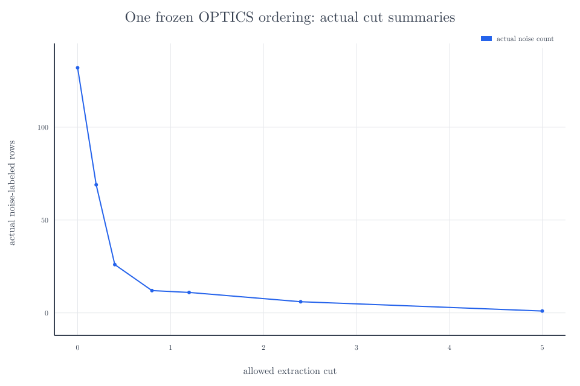
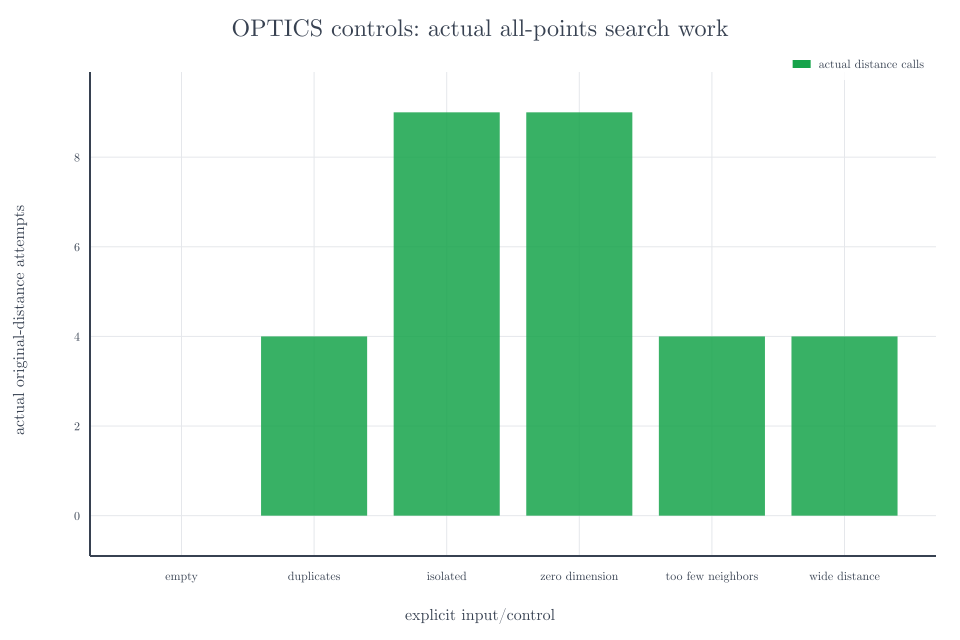

OPTICS: actual density ordering and reachability
Abstract
Start with a four-point hand-checkable ordering, then retain the original132-point mixture of three Gaussian densities and uniform noise. Canonical neighborhood, reachability-update and seed-selection histories expose actual implementation work, while undefined distances and the limits of flat density cuts remain explicit.
Inclusive neighborhoods and the best available reachability
For generating radius eps, N_eps(p) contains every point at Euclidean distance≤eps, including p itself. Duplicate coordinate rows remain separate observations. If at least min_pts neighbors exist, core(p) is the min_pts-th smallest neighborhood distance; otherwise it is undefined. A processed core point proposes
The native driver chooses the smallest current seed reachability by a linear scan. Ties retain the first current seed slot, and removal swaps in the final seed. This is the actual implementation, rather than a heap-based priority queue or indexed spatial search. Outer starts visit still-unprocessed original IDs in ascending order; their reachability remains positive infinity. Each point is processed once, with all-point neighbor searches and sorted neighborhood distances.
A tiny chain and one isolated point
For points[0,.5,1,4], eps=.75,min_pts=2, each point in the first three has core distance.5. Processing0 discovers1 with reachability.5; processing1 discovers2 at.5. Point3 has only itself, so it is a separate undefined-reachability outer start and is not a core point. The diagram/table read the actual canonical visit history.
#include <dm/dm.hpp>
int main() {
std::filesystem::create_directories("build");
auto t = dm::algorithms::optics_trace({{0.}, {.5}, {1.}, {4.}}, .75, 2);
dm::graphics::Diagram d;
for (std::size_t i = 0; i < t.visits.size(); ++i) {
auto &v = t.visits[i];
d.node(std::to_string(v.point),
i < 3 ? dm::graphics::DiagramPoint{double(i) * 7, 0}
: dm::graphics::DiagramPoint{7, -4},
std::format("Actual point {}\ncore {} reach {}", v.point,
v.core_distance, v.reachability));
}
d.edge("0", "1").edge("1", "2");
std::print("| actual order | original point | actual core distance | actual reachability | outer start " "|\n| ---: | ---: | ---: | ---: | --- |\n");
for (std::size_t i = 0; i < t.visits.size(); ++i) {
auto &v = t.visits[i];
std::print("| {} | {} | {} | {} | {} |\n", i, v.point, v.core_distance,
v.reachability, v.region_start);
}
std::print("\nCut labels at.75: `{}`.\n",
dm::algorithms::optics_extract_dbscan(t.run, .75));
d.save_svg("build/optics_tiny.svg");
}| actual order | original point | actual core distance | actual reachability | outer start |
|---|---|---|---|---|
| 0 | 0 | 0.5 | inf | true |
| 1 | 1 | 0.5 | 0.5 | false |
| 2 | 2 | 0.5 | 0.5 | false |
| 3 | 3 | inf | inf | true |
Cut labels at.75: [0, 0, 0, -1].

Retain the original three-density mixture
The native fixture uses local MT19937_64 seed30: forty points each at(0,0)with sd.20,(8,0)with sd.70 and(4,7)with sd.35, followed by twelve uniform[-2,10] coordinate pairs. A fresh normal distribution is constructed for each blob, preserving the original draw schedule. Standard-library random transforms are not asserted bitwise portable. These are synthetic method controls, not external labeled observations.
Run the original eps=5,min_pts=5 and extract at1.2. The plotted profile follows actual processing order rather than original row ID. Its presentation helper replaces undefined reachabilities with an explicit finite ceiling only in the display copy; gray bars mark those replacements. The canonical result retains infinity. Valleys help inspect density structure, but a cut and a visual valley do not prove recovery of the generating labels.
#include <dm/dm.hpp>
int main() {
std::filesystem::create_directories("build");
auto t =
dm::algorithms::optics_trace(dm::algorithms::optics_demo_data(), 5., 5);
auto summary =
dm::algorithms::optics_cluster_summary(dm::algorithms::optics_extract_dbscan(t.run, 1.2));
auto profile = dm::algorithms::optics_reachability_profile(t.run.result);
std::vector<double> undefined_x, undefined_y;
for (std::size_t i = 0; i < profile.position.size(); ++i)
if (profile.undefined[i]) {
undefined_x.push_back(profile.position[i]);
undefined_y.push_back(profile.displayed[i]);
}
auto p = dm::graphics::RPlot::create();
p.bars(profile.position, profile.displayed, "finite reachability",
dm::graphics::RGBA{37, 99, 235, 255}, .9);
if (!undefined_x.empty())
p.bars(undefined_x, undefined_y, "undefined display",
dm::graphics::RGBA{148, 163, 184, 255}, .9);
p.abline_h(1.2, dm::graphics::RGB{220, 38, 38}, 1.5).title(
"Original density mixture: actual reachability order").x_label(
"actual zero-based processing position").y_label(
"reachability; gray denotes undefined").y_limits(
0, profile.undefined_height * 1.2).save_svg("build/optics_original.svg");
std::print("| actual quantity | computed value |\n| --- | --- |\n| original points | {} |\n| processed " "points | {} |\n| extracted cluster sizes at1.2 | `{}` |\n| extracted noise at1.2 | {} |\n| " "actual all-points distance calls | {} |\n| actual linear seed slots scanned | {} |\n| " "undefined reachabilities | {} |\n| presentation-only infinity ceiling | {:.9f} |\n",
t.data.size(), t.run.result.ordering.size(), summary.sizes,
summary.noise, t.run.work.distance_calls,
t.run.work.seed_scan_entries, undefined_x.size(),
profile.undefined_height);
}| actual quantity | computed value |
|---|---|
| original points | 132 |
| processed points | 132 |
| extracted cluster sizes at1.2 | [41, 40, 40] |
| extracted noise at1.2 | 11 |
| actual all-points distance calls | 17424 |
| actual linear seed slots scanned | 3344 |
| undefined reachabilities | 2 |
| presentation-only infinity ceiling | 4.313047834 |

Several cuts from one frozen ordering
The extractor scans processing order. If reachability exceeds the cut, a point starts a new cluster only when its core distance is within the cut; otherwise it is noise. A point whose reachability is already within the cut inherits the current cluster. The run-aware overload verifies0≤cut≤the original generating eps. An old-layout result alone does not retain eps, so its caller is responsible for that restriction.
This is a conventional reachability-cut labeling, not a guaranteed unique label vector for every DBSCAN border assignment or proof of the true generating clusters. Changing min_pts or the generating radius requires another ordering; changing only an allowed cut reuses this one. The following summaries all use the same native result, with no refitting, reclustering loop or recomputed distances in report code.
#include <dm/dm.hpp>
int main() {
std::filesystem::create_directories("build");
auto run =
dm::algorithms::optics_run(dm::algorithms::optics_demo_data(), 5., 5);
std::vector<double> cuts{0., .2, .4, .8, 1.2, 2.4, 5.}, noise;
std::print("| allowed cut | actual cluster sizes | actual noise rows | actual labeled rows |\n| ---: | " "--- | ---: | ---: |\n");
for (double cut : cuts) {
auto s =
dm::algorithms::optics_cluster_summary(dm::algorithms::optics_extract_dbscan(run, cut));
noise.push_back(s.noise);
std::print("| {} | `{}` | {} | {} |\n", cut, s.sizes, s.noise,
s.labels.size() - s.noise);
}
auto p = dm::graphics::RPlot::create();
p.lines(cuts, noise, "actual noise count",
dm::graphics::RGBA{37, 99, 235, 255}).points(
cuts, noise, dm::graphics::RGBA{37, 99, 235, 255}, 3.);
p.title("One frozen OPTICS ordering: actual cut summaries").x_label(
"allowed extraction cut").y_label("actual noise-labeled rows").save_svg(
"build/optics_cuts.svg");
}| allowed cut | actual cluster sizes | actual noise rows | actual labeled rows |
|---|---|---|---|
| 0 | [] | 132 | 0 |
| 0.2 | [36, 7, 20] | 69 | 63 |
| 0.4 | [40, 27, 39] | 26 | 106 |
| 0.8 | [41, 39, 40] | 12 | 120 |
| 1.2 | [41, 40, 40] | 11 | 121 |
| 2.4 | [42, 41, 43] | 6 | 126 |
| 5 | [131] | 1 | 131 |

Work, undefined values and complete contracts
Successful runs query each point once against every point, giving N² distance calls. Sorting neighborhood distances and linear scans of seed candidates lead to O(N²(D+log N)) worst-case work for D-dimensional points; this implementation makes no heap or spatial-index performance claim. Ordinary state is linear in N beyond the input, with no all-pairs distance matrix. Safe original double distance order is retained; nonfinite differences/squared sums select a checked complete long-double hypot route. A distance not representable as finite double throws rather than being confused with the intentional undefined-distance sentinel.
Complete finite rectangular coordinates, finite nonnegative radius and positive min_pts are validated before allocation/search. Self counts as a neighbor, exact radius ties are included, duplicate points are separate observations, and a zero-dimensional row is accepted as a point at zero distance from every matching row. min_pts>N makes every point noncore; an empty dataset remains empty.
Owned trace admission counts controls2, input coordinatesND, result entries3N, each neighborhood record1+2K neighbor entries, each update1, each extraction1+2K seed/priority entries and each visit1. Default1000000 logical units, zero disables. Detailed history can be quadratic; record fields, capacities and allocator overhead are excluded from that policy. Admission precedes retained copies/appends, no partial trace is returned on failure, and no caller references or global mutable state remain.
#include <dm/dm.hpp>
int main() {
std::filesystem::create_directories("build");
std::vector<std::vector<std::vector<double>> > data{{}, {{0.}, {0.}},
{{0.}, {2.}, {4.}},
{{}, {}, {}},
{{0.}, {1.}},
{{0.}, {1e200}}};
std::vector<double> eps{0., 0., .1, 0., 2., 1e201};
std::vector<std::size_t> minimum{1, 2, 2, 2, 5, 2};
std::vector<std::string> labels{"empty", "duplicates", "isolated",
"zero dimension", "too few neighbors",
"wide distance"};
std::vector<double> distances;
std::print("| explicit control | actual distance calls | actual seed extractions | actual widened " "distances | actual processing order |\n| --- | ---: | ---: | ---: | --- |\n");
for (std::size_t i = 0; i < data.size(); ++i) {
auto r = dm::algorithms::optics_run(data[i], eps[i], minimum[i]);
distances.push_back(r.work.distance_calls);
std::print("| {} | {} | {} | {} | `{}` |\n", labels[i],
r.work.distance_calls, r.work.seed_extractions,
r.work.widened_distances, r.result.ordering);
}
auto p =
dm::graphics::RPlot::barplot(distances, labels, "actual distance calls");
p.title("OPTICS controls: actual all-points search work").x_label(
"explicit input/control").y_label("actual original-distance attempts").save_svg("build/optics_controls.svg");
}| explicit control | actual distance calls | actual seed extractions | actual widened distances | actual processing order |
|---|---|---|---|---|
| empty | 0 | 0 | 0 | [] |
| duplicates | 4 | 1 | 0 | [0, 1] |
| isolated | 9 | 0 | 0 | [0, 1, 2] |
| zero dimension | 9 | 2 | 0 | [0, 1, 2] |
| too few neighbors | 4 | 0 | 0 | [0, 1] |
| wide distance | 4 | 1 | 2 | [0, 1] |

Verification
This ten-report batch passes 50 CTest cases, 25 directly instrumented ASan/UBSan
cases, 174 compiled and executed public examples, 707/707 scoped documentation
definitions and ten representative clangd hovers. Independent Python checks
verify 5662 records with 27916 checks: optimal prefix-code costs, train-only
Titanic category counts and held-out confusion, and all 5001 actual original
Lorenz RK4 steps. Frozen valid-input comparisons cover all ten producers, with
intentional guard, ownership, arithmetic and endpoint corrections stated
separately. Twelve checkout headers and twelve byte-identical installed
development headers compile independently; an installed-header native consumer
links and runs. All 40 complete programs execute, and 40 native figures have
been visually reviewed. HTML/Markdown exports preserve computed results and
image bytes. These are scoped native checks. Receipts:
build/mepml-conversion/batch-264-273/.